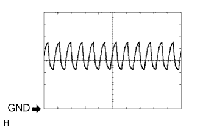
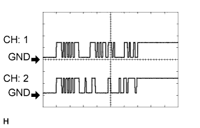

СЕНСОРНАЯ СИСТЕМА ПОМОЩИ ПРИ ПАРКОВКЕ TOYOTA (с 8 датчиками) > КОНТАКТЫ ЭБУ |
| ПРОВЕРЬТЕ ЭБУ ПРЕДУПРЕЖДЕНИЯ О НЕДОПУСТИМОЙ ДИСТАНЦИИ (для моделей без мониторной системы помощи при парковке и/или системы монитора бокового обзора) |
Измерьте напряжение и сопротивление и проверьте импульсные сигналы в соответствии со значениями, приведенными в таблице.
| Номера контактов (обозначения) | Цвет проводки | Описание контактов | Условие | Заданные условия |
| I1-7 (BOR) - I1-17 (E) | P - W-B | Источник питания для цепи заднего датчика | Зажигание выключено | Ниже 1,5 В |
| Зажигание включено, сенсорная система помощи при парковке TOYOTA включена | 7,2 - 8,8 В | |||
| I1-9 (SOF) - I1-17 (E) | V - W-B | Сигнал передачи данных переднего датчика (переднего датчика системы ультразвуковой локации) | Зажигание включено, сенсорная система помощи при парковке TOYOTA включена, рычаг переключения передач в положении R | Формирование импульсов (см. осциллограмму 2) |
| I1-10 (BBZ) - I1-17 (E) | GR - W-B | Сигнал зуммера предупреждения о недопустимой дистанции | Зажигание выключено | Ниже 1,5 В |
| Зажигание включено, сенсорная система помощи при парковке TOYOTA включена | 11 - 14 В | |||
| I1-11 (EF) - I1-17 (E) | LG - W-B | Масса зуммера предупреждения о недопустимой дистанции | Датчик обнаруживает препятствие (звучит зуммер) | Импульсы формируются (см. осциллограмму 1) |
| I1-15 (IG) - I1-17 (E) | L - W-B | Сигнал питания выключателя зажигания | Зажигание выключено | Ниже 1,5 В |
| Зажигание включено | 11 - 14 В | |||
| I1-17 (E) - масса | W-B - масса | Масса | Всегда | Менее 1 Ом |
| I1-18 (E2) - I1-17 (E) | R - W-B | Масса заднего датчика системы ультразвуковой локации | Всегда | Менее 1 Ом |
| I1-19 (E1) - I1-17 (E) | G - W-B | Масса заднего датчика системы ультразвуковой локации | Всегда | Менее 1 Ом |
| I1-21 (BOF) - I1-17 (E) | R - W-B | Источник питания для цепи переднего датчика | Зажигание выключено | Ниже 1,5 В |
| Зажигание включено, сенсорная система помощи при парковке TOYOTA включена | 7,2 - 8,8 В | |||
| I1-24 (SOR) - I1-17 (E) | W - W-B | Сигнал передачи данных заднего датчика (заднего датчика системы ультразвуковой локации) | Зажигание включено, сенсорная система помощи при парковке TOYOTA включена, рычаг переключения передач в положении R | Формирование импульсов (см. осциллограмму 2) |
|  |
С помощью осциллографа проверьте форму сигнала 1.
| Позиция | Описание |
| Номера контактов (обозначения) | I1-11 (EF) - I1-17 (E) |
| Настройки прибора | 2 В/дел., 500 мкс/дел. |
| Состояние автомобиля | Датчик обнаруживает препятствие (звучит зуммер) |
|  |
С помощью осциллографа проверьте форму сигнала 2.
| Позиция | Описание |
| Номера контактов (обозначения) |
|
| Настройки прибора | 5 В/дел., 1 мс/дел. |
| Режим | Зажигание включено, сенсорная система помощи при парковке TOYOTA включена, рычаг переключения передач в положении R |
| ПРОВЕРЬТЕ ЭБУ СИСТЕМЫ ПОМОЩИ ПРИ ПАРКОВКЕ (для моделей с мониторной системой помощи при парковке и/или системой монитора бокового обзора) |
Измерьте напряжение и сопротивление и проверьте импульсные сигналы в соответствии со значениями, приведенными в таблице.
| Номера контактов (обозначения) | Цвет проводки | Описание контактов | Условие | Заданные условия |
| I2-1 (CSB1) - I3-3 (GND1) | R - W-B | Источник питания для цепи переднего датчика | Зажигание выключено | Ниже 1,5 В |
| Зажигание включено, сенсорная система помощи при парковке TOYOTA включена | 7,2 - 8,8 В | |||
| I2-2 (CSG1) - I3-3 (GND1) | G - W-B | Масса переднего датчика системы ультразвуковой локации | Всегда | Менее 1 Ом |
| I2-3 (LIN1) - I3-3 (GND1) | V - W-B | Сигнал передачи данных переднего датчика (переднего датчика системы ультразвуковой локации) | Зажигание включено, сенсорная система помощи при парковке TOYOTA включена, рычаг переключения передач в положении R | Импульсы формируются (см. осциллограмму 1) |
| I2-7 (CSB2) - I3-3 (GND1) | P - W-B | Источник питания для цепи заднего датчика | Зажигание выключено | Ниже 1,5 В |
| Зажигание включено, сенсорная система помощи при парковке TOYOTA включена | 7,2 - 8,8 В | |||
| I2-8 (CSG2) - I3-3 (GND1) | R - W-B | Масса переднего датчика системы ультразвуковой локации | Всегда | Менее 1 Ом |
| I2-9 (LIN2) - I3-3 (GND1) | W - W-B | Сигнал передачи данных заднего датчика (заднего датчика системы ультразвуковой локации) | Зажигание включено, сенсорная система помощи при парковке TOYOTA включена, рычаг переключения передач в положении R | Импульсы формируются (см. осциллограмму 1) |
| I3-1 (+B) - I3-3 (GND1) | L - W-B | Сигнал источника питания | Всегда | 11 – 14 В |
| I3-3 (GND1) - масса | W-B - масса | Масса | Всегда | Менее 1 Ом |
| I3-7 (IG) - I3-3 (GND1) | L - W-B | Сигнал питания выключателя зажигания | Зажигание включено | 11 - 14 В |
| I3-8 (ACC) - I3-3 (GND1) | P - W-B | Сигнал питания ACC | Замок зажигания в положении ACC | 11-14 В |
| I3-9 (CSSW) - I3-3 (GND1) | V - W-B | Сигнал главного выключателя системы ультразвуковой локации | Зажигание включено, главный выключатель системы ультразвуковой локации включен | 11 - 14 В |
| Зажигание включено, главный выключатель системы ультразвуковой локации выключен | Менее 1 В | |||
| I3-15 (REV) - I3-3 (GND1) | R - W-B | Сигнал заднего хода | Зажигание включено, рычаг переключения передач в положении R | 11–14 В |
| Зажигание включено, рычаг переключения передач не в положении R | Менее 1 В | |||
| I3-17 (EF) - I3-3 (GND1) | LG - W-B | Масса зуммера предупреждения о недопустимой дистанции | Во время звучания зуммера | Формирование импульсов (см. осциллограмму 2) |
| I3-18 (BBZ) - I3-3 (GND1) | GR - W-B | Сигнал зуммера предупреждения о недопустимой дистанции | Зажигание выключено | Ниже 1,5 В |
| Зажигание включено, сенсорная система помощи при парковке TOYOTA включена | 11 - 14 В | |||
| I3-24 (TX-) | LG | Сигнал связи AVC-LAN | - | - |
| I3-25 (TX+) | L | Сигнал связи AVC-LAN | - | - |
С помощью осциллографа проверьте форму сигнала 1.
| Позиция | Описание |
| Номера контактов (обозначения) |
|
| Настройки прибора | 5 В/дел., 1 мс/дел. |
| Режим | Зажигание включено, сенсорная система помощи при парковке TOYOTA включена, рычаг переключения передач в положении R |
С помощью осциллографа проверьте форму сигнала 2.
| Позиция | Описание |
| Номера контактов (обозначения) | I3-17 (EF) - I3-3 (GND1) |
| Настройки прибора | 2 В/дел., 500 мкс/дел. |
| Состояние автомобиля | Датчик обнаруживает препятствие (звучит зуммер) |
| ПРОВЕРЬТЕ ЭБУ ПЕРЕКЛЮЧАТЕЛЯ ПОМОЩИ ПРИ ДВИЖЕНИИ |
Измерьте сопротивление в соответствии со значениями, приведенными в таблице ниже.
| Номера контактов (обозначения) | Цвет проводки | Описание контактов | Условие | Заданные условия |
| G76-3 (SWI1) - G76-4 (SWI2) | SB - P | Входной сигнал переключателя на рулевом колесе (Menu, ENTER, Up или Down) | Зажигание включено, нажата кнопка Menu (меню), ENTER (ввод), Up (вверх) или Down (вниз) | Менее 1 В |
| Зажигание включено, кнопка Menu (меню), ENTER (ввод), Up (вверх) или Down (вниз) не нажата | 11 - 14 В | |||
| G76-4 (SWI2) - масса | P - масса | Входной сигнал переключателя на рулевом колесе (Menu, ENTER, Up или Down) | Всегда | Менее 1 В |
| G76-12 (SWO1) - масса | V - масса | Выходной сигнал переключателя на рулевом колесе (Menu, ENTER, Up или Down) | Зажигание включено, нажата кнопка Menu (меню), ENTER (ввод), Up (вверх) или Down (вниз), чтобы включить сенсорную систему помощи при парковке TOYOTA | Менее 1 В |
| Зажигание включено, кнопка Menu (меню), ENTER (ввод), Up (вверх) или Down (вниз) не нажата | 11 - 14 В |